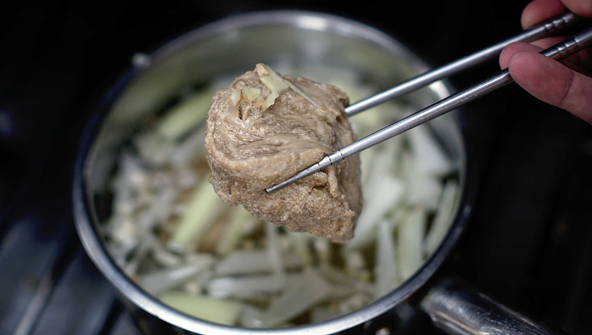
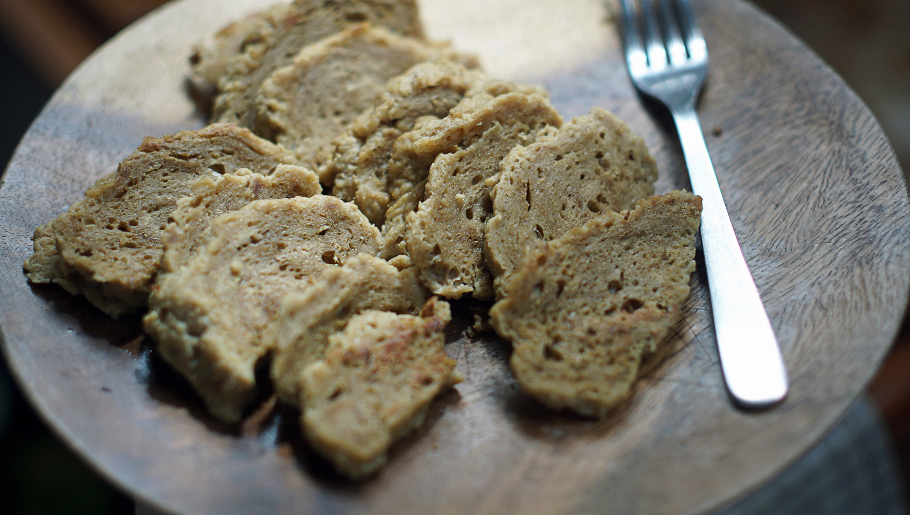
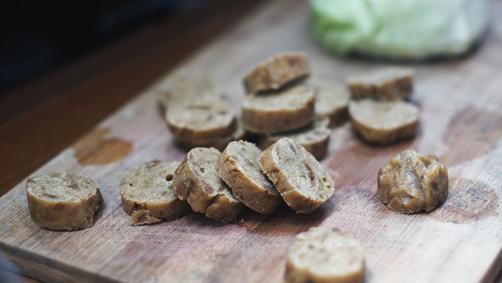

seitan
2 servings — 60 minutes
Seitan (say-tan) or wheat meat, can be made into a variety of meat-like foods using a variation of spices and other seasonings. It is the base of Buddhist vegetarian cooking, and has been documented in China since the 6th century. It's an ingredient that is also present in Japanese cuisine, for Shojin Ryori (vegetarian cooking) - an important term to remember if you don't eat meat and are traveling the country. Seitan takes on a different name there - it is known as Fu, and can be found in two forms, raw (nama-fu) or dry-baked (yaki-fu, which looks like bread).

Seitan, or Fu, can be produced at home, but it's very labor intensive. Making it requires kneading wheat flour with water to rinse out the starch from the wheat, what remains is a sticky mass of pure gluten protein. If your plan is to make it from scratch, good on you, but otherwise, gluten flour (or vital wheat gluten) is your best bet. The basic ingredients for seitan are gluten flour and water, but it's best to flavour it with other ingredients - it is rather bland on its own. The amount of liquid that you use to make your dough will also affect the chewiness of your seitan, less waters means more chewy with a harder texture, and more will make it tender.
In this recipe, I added chickpea flour for added nutrition. Wheat gluten proteins are deficient in lysine (an essential amino acid for good health), adding a lysine-rich food like chickpea flour to the mix makes up for this deficiency.
When preparing seitan, it's important to flavour both the inside and outside of the dough. Adding a variation of ingredients to the dough mix such as ginger, garlic, onion powder, tomato sauce, soy sauce and so on will make it extra flavourful, the same goes for the broth. Adding vegetable broth and soy sauce as a base, and roughly chopped onions, garlic and ginger will season the outside of the dough.

There are 3 ways to cook seitan: boiling, steaming or baking. In this recipe, I used the boiling method. Steaming requires wrapping the dough in foil or some other wrapper to help it keep its shape, then steaming it in a steamer basket over a pot of boiling water for 30 minutes or so. Baking the seitan, means flattening or stretching the dough to fit the baking dish, adding seasonings overtop, and baking it for an hour. All methods are good, but some are better for certain kinds of meals.
 gluten flour 70 g
gluten flour 70 g chickpea flour 20 g
chickpea flour 20 g soy sauce 15 ml
soy sauce 15 ml water 80 ml
water 80 ml
seitan
- In a bowl, stir 70 g (1/2 cup) of gluten flour with 20 g (1/4 cup) of chickpea flour.
- In another bowl, mix 80 ml of water (or vegetable broth) and 15 ml (1 tbsp) of soy sauce. Pour into dry ingredients.
- Knead for 2-3 minutes. If dough is too sticky, add more flour. Let rest for 10 minutes, and knead for another set of 2-3 minutes.
- Separate dough in two - optional, but it creates more surface area that can inbibe flavour. Also, the seitan expands quite a bit and having smaller pieces makes it more manageable.
 garlic 2 cloves
garlic 2 cloves ginger root 1 knob
ginger root 1 knob vegetable bouillon 700 ml
vegetable bouillon 700 ml yellow onion 1
yellow onion 1
broth
- Cut the following ingredients into smaller pieces: 2 cloves of garlic, a 1 yellow onion and 1 palm-sized knob of ginger.
- Add the cut ingredients to a pot, add 700 ml of vegetable broth (or 15 g (1 tbsp) of vegetable broth powder in 700 ml of water) and 30 ml (1 tbsp) of soy sauce. Bring to a boil.
- Add the seitan cutlets, reduce heat to low, and cover.
- Let the seitan simmer for 1 hour.
- Cut into slices, and sautee them in a pan with seasonings - you can also add a glaze for extra flavour. Usually we drink the broth as a sidedish too, it's very good - if not a bit salty.